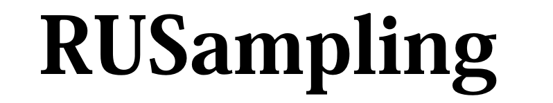
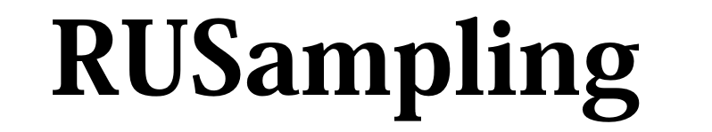

Details
t refers to an instance of the Ru class.
Init
Parameters when initialising t:
logfShould accept a shape (n, d) np.array and return a shape (n,) np.array. In the d=1 case, acceps x as either (n, 1) or (n,).
Non-vectorised functions are also supported, i.e. (d,) -> float (or d=1: float -> float). However, if possible, vectorise your function over multiple x values using numpy broadcasting, as this massively speeds up the sampling.
**logf_argsExtra keyword arguments that logf takes.
d=1Dimension of the random variable.
ics = [0, .., 0]Initial conditions with which to find the mode of f. A d-dimensional list.
If Ru fails, check these first; in particular, make sure they lie in a region where f is not identically zero.
-
X_to_x = None, X_to_x_logj = NoneUser-defined transformation to apply (first) to the space. (The transformation is undone before samples are returned.)
If, say, the transformation is X(x), the inverse x(X), i.e. 'X-to-x', must be passed, as well as the log-Jacobian of this inverse.
It is assumed that initial conditions passed have had this transformation applied, so are values of X, not x.
-
YJ_lambda = NoneThe Yeo-Johnson transformation is applied if lambda are supplied as a d-dimensional list. This may increase acceptance probability.
-
optim_method = 'Nelder-Mead'Method used to find the maxima of f and other relevant functions. See the SciPy docs on scipy.optimize.minimize for methods. The method chosen must use f only, not its derivatives.
r = 0.5Tuning parameter to use in the Ratio-of-Uniforms algorithm, which affects the acceptance probability. r=0.5 is optimal in the Gaussian case.
rotate = TrueReducing the correlation between the dimensions of the random variable can improve acceptance probability. Ru attempts to do this by rotating the axes. Applies when d>1.
rectangle = NoneThe bounding rectangle for f is calculated automatically. If you wish to calculate it separately, e.g. if the optimization method Ru uses (Nelder-Mead simplex) fails, provide a (2, d)-dimensional numpy array, where (0, :) are the minimums and (1, :) the maximums.
Sampling
After initialising, call:
-
t.rvs(n=N)to return a (N, d) numpy array of samples. -
t.rvs_detail(n=N)(instead of rvs) to return a dict with keys 'rvs' (samples), 'pa' (acceptance probability) and 'time' (elapsed during sampling). -
t.plot()for d=1,2, after generating samples to plot the samples in a histogram/scatter plot against f. t.f()for the transformed function which the algorithm is applied to;t.f_original()is the original pdf.t.info()to print out the bounding rectangle.t.plot_f()for d=1, 2 to confirm that the bounding rectangle has been found correctly.-
Pass
undo_transformations=Falseto either rvs or rvs_detail of these to return the transformed variable.